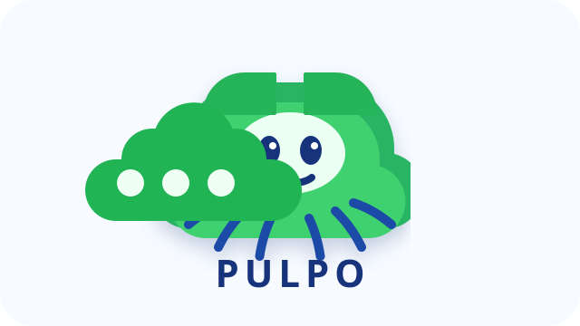

Boardroom Arcade
Pulpo
Una startup donde humanos e IAs se coordinan como si fueran un equipo de videojuego. Ocho asientos, una mesa central y un cerebro compartido para repartir trabajo complejo entre especialistas.
Sala de reuniones
Ocho puestos en una mesa viva
3 izquierda
3 derecha
2 cabeceras
Direccion general. Nodo de cabecera para vision, foco y decisiones estrategicas.
Coordinacion y automatizacion. Equipo principal con Tailscale activo y conectado.
Onboarding y operaciones. SSH operativo y puerto 22 verificado en escucha local.
Desarrollo y operaciones. Tailscale activo, SSH activo y GitHub CLI instalado.
Mesa central
Tareas
4
Ramas
2
Runes
Live
Pulpo Board
El cerebro coordina tareas grandes, reparte brazos de trabajo y consolida resultados.
Directora de Arte en el inventario de sede. Referencia visual y narrativa del equipo.
Director Tecnico en el inventario de sede. Nodo para arquitectura y decisiones de stack.
Director de Operaciones segun inventario. Nodo pensado para continuidad y despliegue.
Laboratorio y pruebas cruzadas. Nodo de soporte, ahora mismo pendiente de reactivacion.
Identidad
Nube Admira + pulpo
El nuevo logo mezcla la nube verde de Admira con un pulpo central para comunicar cerebro, brazos en paralelo y coordinacion entre equipos y agentes.
Concepto
Startup convertida en escenario
No es un dashboard sin alma. Es una mesa de direccion donde cada asiento ya representa un ordenador concreto de Admira Next con su papel dentro del sistema.
Inspiracion
XTANCO, pero en boardroom
Conserva la escenografia arcade y el caracter jugueton de Xtanco, pero cambia el local por una sala de reuniones con jerarquia, colaboracion y estrategia.
Siguiente paso
MVP interactivo
Convertir esta sala en una demo navegable donde cada maquina tenga estado vivo, foco actual y acciones asociadas a su nodo real.